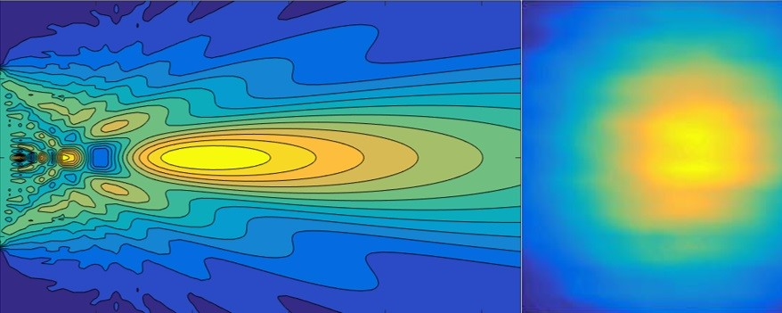

Nondestructive Testing
Skills Demonstrated
Signal Processing
MATLAB
CNC Machining
LabVIEW
CAD
Finite Element Analysis
Working under the direction of Professors Laurence Jacobs and David Torello at Georgia Tech, I designed and implemented a novel air-coupled transducer calibration technique.
Problem
How do you measure the strength of a material without breaking it? When evaluating the wear and tear of bridges, airplane wings, and nuclear reactor walls, nondestructive material testing techniques are invaluable. Due to their precision and flexibility, ultrasonic transducers are often used to estimate the remaining life of important components in structures. However, due to practical constraints such as the surface roughness of the material being tested, methods that work in perfect laboratory conditions cannot be employed directly in the field.
." alt="Visual inspection of compressor blades">To solve this problem, some researchers are turning to air-coupled transducers for their low cost and greater robustness to surface conditions. By moving the transducer off of direct contact with the part being tested, we no longer need to worry about ensuring perfect coupling between the face of the transducer and the material surface. However, air-coupled transducers require performing a precise calibration to work, and there exists no method to do so in the field.
Nonlinearity
When an acoustic wave travels through a material, defects in the material called "nonlinearities" transfer some of the acoustic energy in the fundamental frequency of the wave into harmonics. Simply put, if a 2 MHz wave enters a damaged material, nonlinearities in the material will generate a second acoustic wave at 4 MHz, twice the frequency of the input wave. The strength of the generated harmonic relative to that of the fundamental tells us how damaged, or nonlinear, the material is. When a transducer produces an acoustic wave at one end of an object, we model the wave as a sum of Gaussians which each propagate through the material as Gaussians, picking up nonlinearity as they travel. By measuring the accumulated nonlinearity, we can calculate how damaged the material is.
Solution
 We designed an experiment in which we generated an acoustic wave at the base of a material with a known nonlinearity. We used our nonlinear modelling technique to analytically determine the magnitude of both the fundamental and harmonic components at the opposite surface. To confirm our model, we used a laser interferometer to measure the physical surface displacement. After confirming our model, we then repeated the experiment replacing the laser interferometer with a much less expensive, but uncalibrated, air-coupled transducer. By propagating the model from the surface of the material through the air to the transducer, we could directly link the transducer output in Volts to the physical strength of the propagating waves. This experimental voltage-to-pressure mapping is unique to the transducer and can be used in future experiments to easily determine material nonlinearity.
We designed an experiment in which we generated an acoustic wave at the base of a material with a known nonlinearity. We used our nonlinear modelling technique to analytically determine the magnitude of both the fundamental and harmonic components at the opposite surface. To confirm our model, we used a laser interferometer to measure the physical surface displacement. After confirming our model, we then repeated the experiment replacing the laser interferometer with a much less expensive, but uncalibrated, air-coupled transducer. By propagating the model from the surface of the material through the air to the transducer, we could directly link the transducer output in Volts to the physical strength of the propagating waves. This experimental voltage-to-pressure mapping is unique to the transducer and can be used in future experiments to easily determine material nonlinearity.
Our method worked! We tested the calibration on two common materials, aluminum and silicon, and were able to determine the nonlinearity of both materials to high accuracy. I presented our methodology at the Review of Progress in Quantitative Nondestructive Evaluation conference and we published our work in the journal Ultrasonics. You can download our paper here and my poster here.